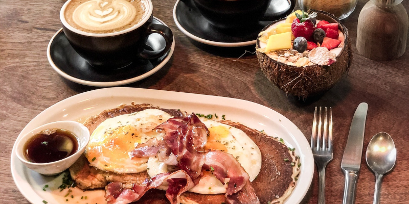

Short Order Designer
2022-01-26

In many corporate environments the UX/UI Designer is part of the marketing team.
They are included in the initial stages of a project and speak directly with stakeholders. Asking important questions that dig into what the stakeholder needs. While solving problems to create a good user experience.
UX/UI Designers in these “Front and Center” positions must have excellent skills in time management, interpersonal communication, and balance their work between research and creating design assets. All without going out of scope, over time, or budget. Requiring a flexible mindset and training in multiple disciplines to become competent.
This is NOT the only type of UX/UI Designer role out there.
I’m currently in what I call a “Short Order Designer” role, and I love it.
What’s a “Short Order Designer” ?
Let’s start with a quick definition of a “Short Order Cook”:
A Short Order Cook prepares items listed on the menu, along with a few variations. These dishes can be made quickly. These cooks work in places where speedy service is emphasized.
A “Short Order Designer” assembles assets and UI Layouts from elements within a previously built design system and/or project. These designers work in an environment where projects are managed by an internal committee. They never interact with clients or stakeholders.
The fonts, colors, components, and overall theme of each project has been decided by the committee.
A project manager assigns task to the Designer where they assemble components on pages like legos.
This approach has the following positive benefits:
- Allows for rapid prototyping of new ideas and iterations of solutions.
- Gives more time for the committee and/or project managers to review, change their mind, and choose the direction of each page.
- Once completed the prototype provides the development team with a blueprint to build from.
On my first day the Department Director told me: “Done is better than perfect”.
Because the company uses SCRUM and Agile methodologies to iterate through various design options. They prefer fast draft versions of a design they can review and change. Instead of a perfect working prototype that will need to update many times to accommodate constantly changing requirements.
This “Decision by Committee” approach to design took some getting used to. I don’t always agree with their approach. I offer my expert opinions on industry standards and Design best practices. As well as suggestions on what will create a better User Experience. Sometimes they listen to me and sometimes they don’t.
As a “Short Order Designer” my job is to use Adobe XD to design whatever they request.
Keep in mind the “Short Order Cook” and the “Short Order Designer” both work from a menu of existing items. They cannot create from nothing.
If you ask a Short Order Cook for a Pancake Breakfast. You’ll get a Pancake Breakfast.
If you ask a Short Order Designer for a page layout with a login form. You’ll get that too.
If you don’t know what you want and/or cannot explain it, neither the cook nor the designer can make it for you.
So take time to figure out what you want, before placing your order.